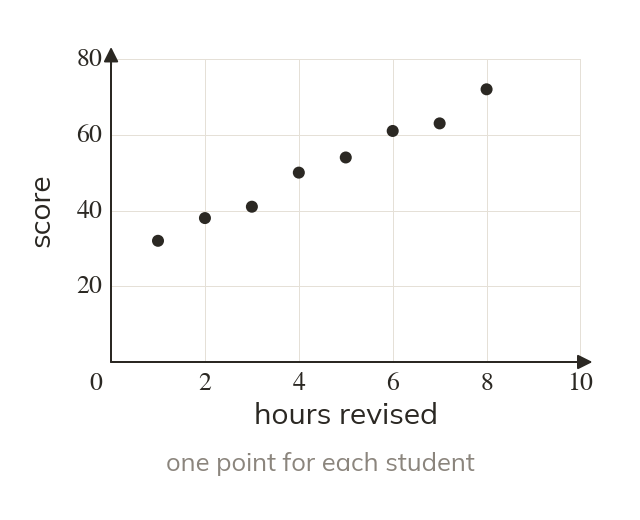
Bivariate data
Each item gives a pair of values, such as hours revised and a test score. A scatter diagram plots each pair as one point.
A scatter diagram shows at a glance whether two variables are linked, and how closely. Describing that link in context, and knowing what it does not prove, sets up the regression line in the next lesson.
Work down the page at your own pace. Write every answer in your book first, then click to check it.
Read each card, then follow the worked examples one step at a time.

Each item gives a pair of values, such as hours revised and a test score. A scatter diagram plots each pair as one point.
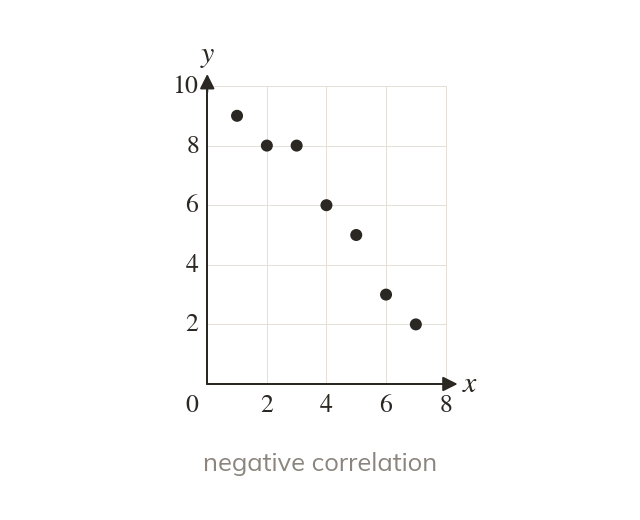
In positive correlation one variable increases as the other increases. In negative correlation one decreases as the other increases.
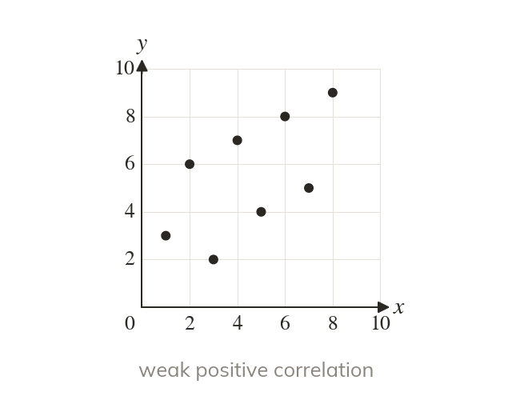
Points close to a straight line show strong correlation. Points spread widely about a line show weak correlation.
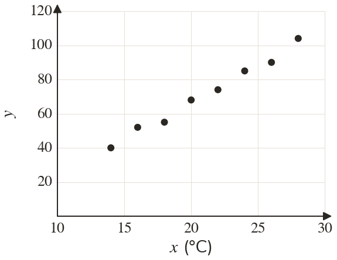
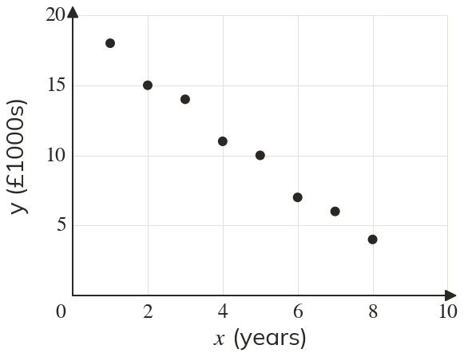
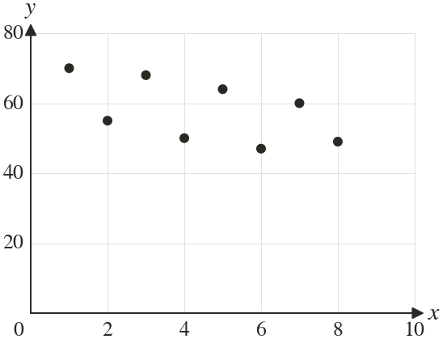
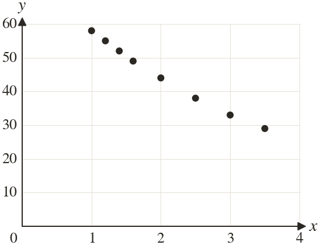
Pick an answer. If it's wrong, the feedback tells you which mistake it was.
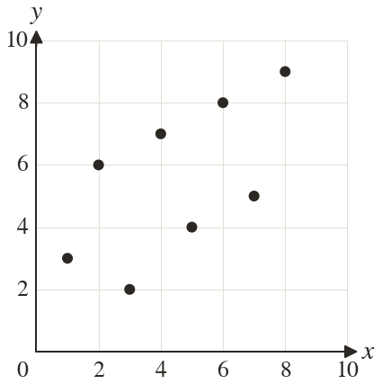

Write the blanks in your book first, then tap each one to check.
Read each card, then follow the worked examples one step at a time.
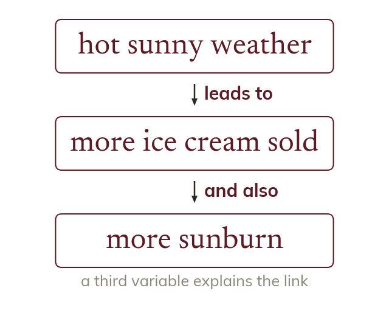
Towns that sell more ice cream have more cases of sunburn. Ice cream does not cause sunburn, as hot sunny weather increases both.
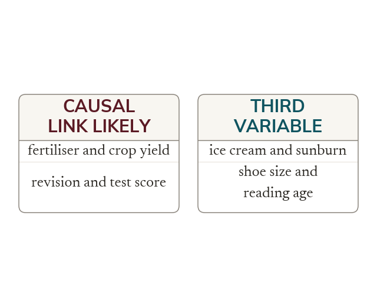
Fertiliser used and crop yield show positive correlation. A causal link is reasonable here, as fertiliser helps plants grow.
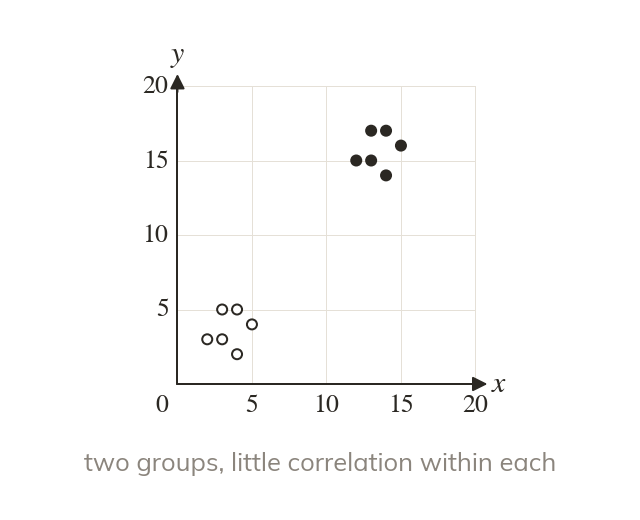
Points can form two separate groups, such as kittens and adult cats. Overall the correlation looks strong, but within each group there is little or none.
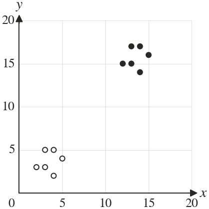
Pick an answer. If it's wrong, the feedback tells you which mistake it was.
Write the blanks in your book first, then tap each one to check.
Finished? Next lesson: S4.2 Linear Regression.
For each skill, tap the one that is true for you today. Your Revise pages start with anything you mark Not yet.
Your ratings are saved on this device only.
Log in, then search for a code to practise that skill.